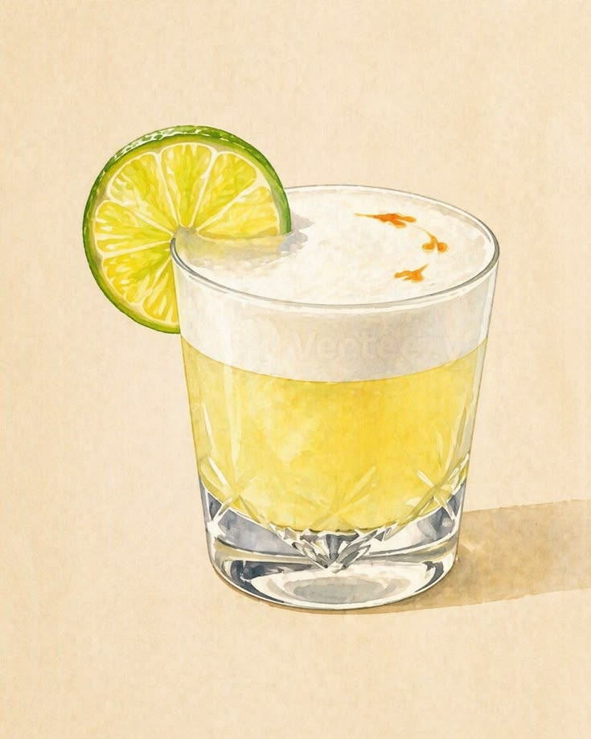

La bebida nacional del Perú es el pisco. Se trata de un destilado aguardiente de uva cuya producción se inició a fines del siglo XVI la provincia de Pisco (actualmente ubicada en el departamento de y se extendió posteriormente a las haciendas de la costa peruana